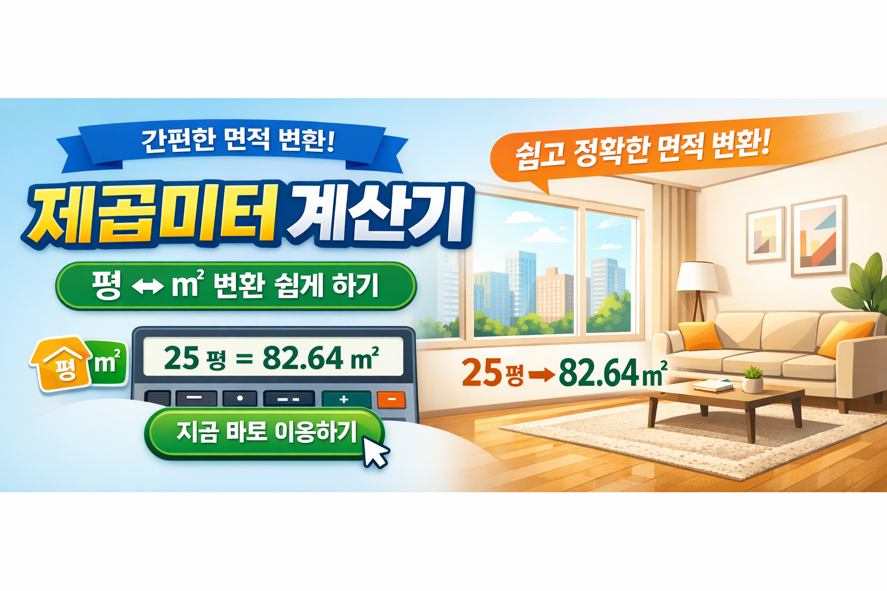

부동산이나 인테리어를 진행할 때 가장 자주 헷갈리는 부분 중 하나는 바로 면적 단위입니다. 특히 평수와 제곱미터(㎡)를 빠르게 변환해야 하는 경우가 많습니다.

👉 바로 계산해보기 제곱미터 계산기 바로가기
제곱미터는 국제 표준 단위이며, 평수는 한국에서 주로 사용하는 면적 단위입니다. 1평은 약 3.3058㎡에 해당합니다.
복잡한 계산 없이 빠르게 면적을 확인하고 싶다면 위 계산기를 활용해보세요.